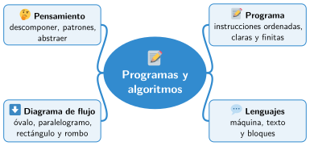

Bloque II · Programación
UD03 Programas, lenguajes y algoritmos
Sesiones
- Sesión 3.1 Concepto de programa
- Sesión 3.2 Lenguajes de programación: de la máquina a los bloques
- Sesión 3.3 Algoritmos y pensamiento computacional
- Sesión 3.4 Diagramas de flujo: símbolos y reglas
Al terminar la unidad
Mapa mental de la unidad

✏️ Repasa la unidad con el mapa: tapa una rama y explica en voz alta lo que pone.